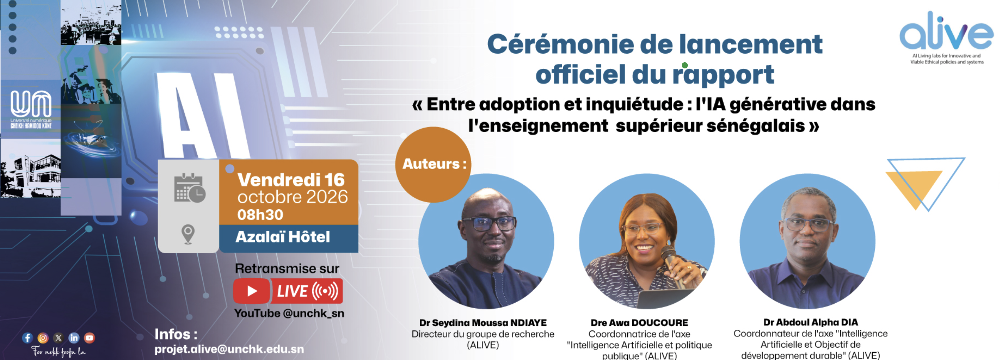
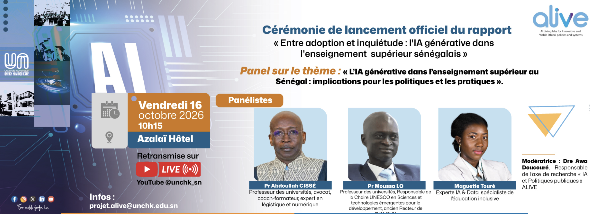
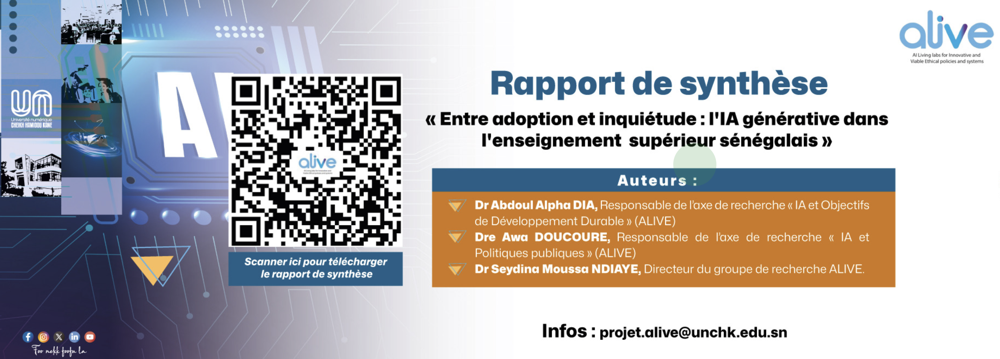
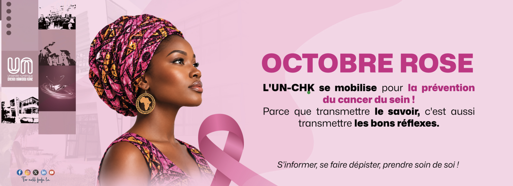
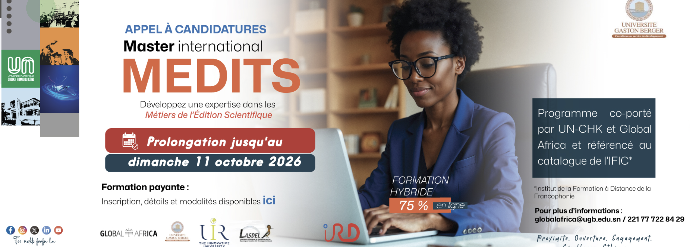
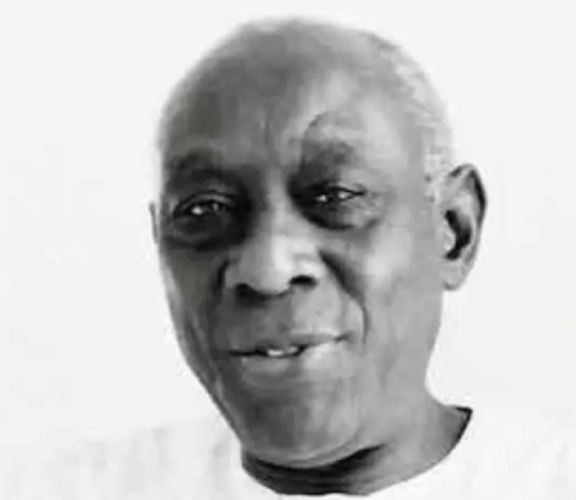
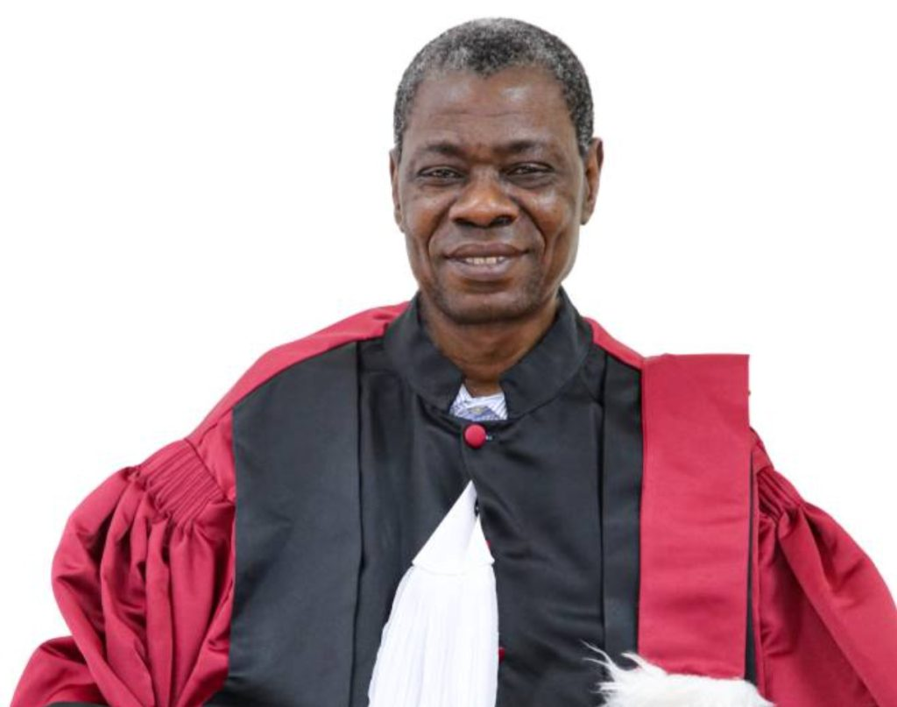
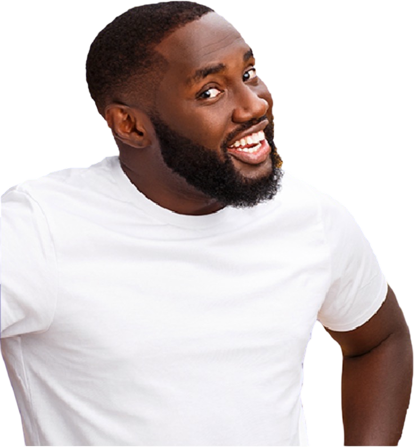

Rappel à Dieu de M. Cheikh Hamidou KANE, parrain de l’UN-CHK
4 octobre 2026L’Université numérique Cheikh Hamidou Kane (UN-CHK) a appris avec une profonde affliction le rappel à Dieu de son illustre parrain, Monsieur Cheikh Hamidou
Lire la suite →






L’Université numérique Cheikh Hamidou Kane (UN-CHK) a appris avec une profonde affliction le rappel à Dieu de son illustre parrain, Monsieur Cheikh Hamidou
Lire la suite →
Le Professeur Samuel OUYA, Recteur de l’Université numérique Cheikh Hamidou Kane (UN-CHK), a été nommé à la présidence de la Commission « Innovations
Lire la suite →Université publique numérique

Licences
Masters